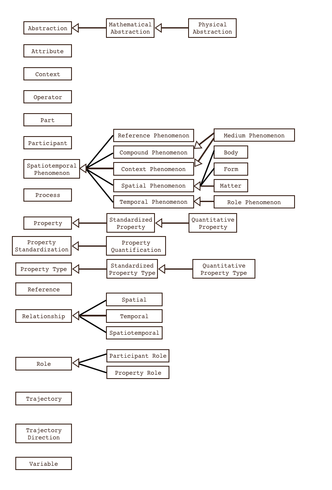
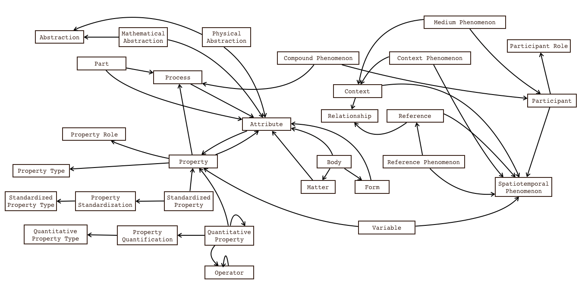

The Upper Ontology (SVU) component of the Scientific Variables Ontology (SVO) declares and identifies the conceptual classes, relationships, and rules necessary for identifying, disambiguating, and assembling scientific variables. SVU comprises both a top-down, inheritance architecture of classes and subclasses (i.e., a taxonomy), as well as a "lateral" architecture that defines how classes are linked together and which links are required and which are optional. A snapshot of the current vertical architecture is shown below. This architecture is not currently finalized, but has undergone multuple revisions. Each class is defined in more detail in the following sections.
The lateral architecture defines relationships that determine how classes are linked together to create more complex concepts. The fundamental premise of the ontology, that both a Phenomenon and a Property are needed to fully describe a variable, is captured here. A snapshot of a selection of these relationships is shown in the diagram below. This diagram is only meant to be illustrative and does not depict all of the relationships present, nor does it identify restrictions on relationships.
In addition to vertical class-subclass relationships and lateral relationships, the SVU also declares annotation properties that aid in identifying synonyms, different lexical terms for the same concept (e.g., such as the verb and nominalization of a verb pairs that identify processes), Wikipedia pages that can be referred to as documentation, and other relevant documentation for existing terms.
A spatiotemporal phenomenon is something that is or can be observed to happen or exist. The term comes from the idea proposed by Kant that noumena are things in and of themselves, while phenomena are the way things appear to humans as a consequence of observation (see Bertrand Russel's The History of Western Philosophy for more). A spatiotemporal phenomenon may have spatial aspects and/or temporal aspects.
SpatialPhenomena are phenoma defined by their spatial extent but that are relatively static in temporal extent. This class refers to phenomenona that are at relative equilibrium and/or steady state within the temporal context of an observation.
Matter is the substance/material/essence of which something is made.
The Form class contains elements which describe the shape or configuration of something; terms in this category define the spatial extent of something without defining its substance or essence.
A Body is a spatial phenomenon that has both a well-defined form and substance.
A temporal phenomenon is one that is identified through its temporal aspects and not its spatial aspects.
A role phenomenon is a phenomenon identified through the actions that a spatial phenomenon takes without identifying the substance, essence or spatial extent of that phenomenon. In advanced reasoning algorithms, relationships between categories of spatial phenomena and those of role phenomena are used to determine which spatial phenomena can participate in what roles.
A CompoundPhenomenon is the construct for assembling Phenomena of interacting or non-interacting Phenomena groups. When the groups are interacting, a process is identified. A CompoundPhenomenon links together Participant types, each of which identifies a participating Phenomenon as well as its Role. Roles are assigned within the reference frame of a measurement. It is possible that a certain type of Phenomenon may have mutliple CompoundPhenomenon representations depending on the point of view/perspective of the observer. This is consistent with the fact that a Phenomenon is the human perception of a Noumenon.
A ContextPhenomenon provides spatial or temporal context to a Phenomenon. This is the construct that allows the linking between a Phenomenon and its Context, which comprises a Phenomenon and a Relationship.
A MediumPhenomenon is a combination of a ContextPhenomenon and a CompoundPhenomen. It is utilized to indicate that a Phenomenon is a Medium with relation to another Phenomenon. This relationship has two connotiations: (a) that one Phenomenon is located in another Phenomenon (Context) and (b) that one Phenomenon has a role of solvent and the other has a role of solute, with very loose definitions of solvent and solute. This construct is important when both the medium and the main Phenomena are being quantified by the property.
A ReferencePhenomenon provides spatial or temporal reference for the evaluation of a Phenomenon Property (Variable). This concept is similar to the ContextPhenomenon class but provides a reference frame rather than a contextual frame.
A property is a quality or characteristic of something. A property differs from an attribute in that it is not attached to a value. As an example, 'color' is a property of eyes, while 'brown color' is an attribute of a particular eye. A property is shorthand for a Qualitative Property. While observing a phenomenon, one may wish to describe it to others to communicate ideas. The aspects of a phenomenon chosen to describe that phenomenon are its properties.
A Standardized Property may be qualitative or quantitative. It is a property that has been standardized in some way to allow comparison and analysis of data from different sources. Examples include qualitative indexes and metrics.
A Quantitative Property (the original term for this category was Quantity, but has been changed to avoid confusion with the QUDT definition of Quantity) is a property that has been quantified in some standard, numerical way that allows meaningful mathematical manipulation of the data. Quantitative Properties are annotated with a unit dimension string of the form "La Mb Tc Id Oe", where L, M, T, I, and O represent the canonical dimensions of length, mass, time, electric current, and temperature, respectively. Quantitative Properties map to Quantity Kind in QUDT and provide a means for linking QUDT capabilities for unit conversion, where available, into SVO.
A Variable comprises a Phenomenon-Property pair. In an observation, a variable is that for which we observe and record values.
An abstraction is an abstract entity, whether a purely mathematical construct or an abstract physical concept.
A mathematical abstraction is any mathematical entity.
A Physical Abstraction is a Mathematical abstraction that is applied to a physical phenomenon. Examples include wheelbase and shoreline which are both line abstractions, one of the distance between two wheels and one delineating the contour of a shore.
This class is a temporary catchall for restrictions, contextual information, or model settings that may be necessary in scientific modeling. The instances in this category will be merged into other classes and other ontological concepts in future versions of the ontology.
An attribute consists of a property-value pair. An attribute may also be thought of as the property of a property. Attributes are used to narrow the identification of a phenomenon by defining constant properties of that phenomenon within the time and spatial reference frame of measurement. In SVO there is no class to categorize 'values' since there are potentially an infinite number of values that would have to be included. Since no value can be independent of a property, values are included as "stubs" and are attached to properties through the attribute construct. Quantitative Attributes (for which there is currently no dedicated class) map to Quantities in QUDT.
Context provides a phenomenon and a context relationship. It can be attached to any phenomenon to give context though the ContextPhenomenon class.
An operator is a mathematical operation that can be performed on a quantity to transform it into a new quantity.
A part has no essence without being attached to a Body, Form or some other Phenomenon or Abstract Concept. A Part must be attached to one of these before being included in a variable. Examples include top, bottom, side, core, center, apex, and subskin.
Participant is the modular class for assigning a role to a phenomenon so that it can be a participant in a Compound Phenomenon.
A process is something that happens, whether in one step or multiple steps. A process refers specifically to the actions of something. A one-step, infinitesimally short process is usually referred to as an action. A process along with all of its actors/participants, their roles, etc. is a Phenomenon.
Methods used to convert a qualitative property into an anlyzable product. Standardizations are still prone to subjective assessment.
A PropertyQuantification is a PropertyStandardization that is objective and quantitative (numerical).
A property type denotes the type of a property. Quantitative properties may have the following types: scalar, vector, tensor, and field. Standardized, but not Quantitative (e.g., mathematical operations cannot be performed on them), Properties may have the following types: Categorical, dichotomous, binary, boolean, ordinal and interval. Binary is a dichotomous variable that takes the values 0 and 1, while Boolean is a dichotomous variable that takes the values True and False. A Boolean variable is used in Boolean Algebra operations, and could be mapped to a binary variable.
This class includes standardized property types, such as nominal, categorical, binary, and boolean.
This class includes the instances of dimensionality (2-d tensor, 1-d tensor (vector), 0-d tensor (scalar)) as well as the instance 'field'.
A Reference is a modular entity for linking a Phenomenon with a reference relationship. It can then be used to profide a reference frame for a variable using ReferencePhenomenon.
Spatial and temporal relationships that can be used to construct Context and Reference instances.
Spatial relationships such as above, below, or next to.
Temporal relationships such as before, after, and during.
Spatiotemporal relationships are usually dependent on some kind of process. Orbitting is an example.
Roles determine in what capacity an entity is functioning within a greater context. The same entity may take on different roles in different contexts.
The ParticipantRole class covers the role that different participants play when constructing a CompoundPhenomenon At present, these roles are generic, defined from the reference frame of observation, and are process-independent. In the future, this functionality may be expanded.
The PropertyRole class covers the role that different properties can take within a certain context. At the moment this is a catch-all category, including coefficient, parameter, and exponent.
Trajectory identifies the spatiotemporal path taken by a body undergoing the process of motion in space. It will in the future be expanded to mean the trajectory of any process.
A TrajectoryDirection identifies the direction in which a trajectory is covered.